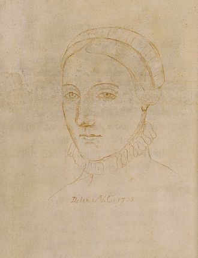

Anne Hathaway

Charles Dickens

Oscar Wilde

Miguel de Cervantes

Edgar Allan Poe

William Wordsworth
William Shakespeare (bapt. 26 April 1564 – 23 April 1616) was an English poet,
playwright and actor,
widely regarded as the greatest writer in the English language
and the world's greatest dramatist.
He is often called England's national poet and the
"Bard of Avon". His extant works, including
collaborations, consist of approximately
39 plays, 154 sonnets, two long narrative poems, and a few
other verses, some of
uncertain authorship. His plays have been translated into every major living
language
and are performed more often than those of any other playwright.
Shakespeare was born and raised in Stratford-upon-Avon, Warwickshire. At the age
of 18, he married
Anne
Hathaway, with whom he had three children: Susanna and
twins Hamnet and Judith. Sometime between
1585
and 1592, he began a successful
career in London as an actor, writer, and part-owner of a playing
company called the
Lord Chamberlain's Men, later known as the King's Men. At age 49 (around 1613),
he
appears to have retired to Stratford, where he died three years later. Few records of
Shakespeare's
private life survive; this has stimulated considerable speculation about
such matters as his
physical
appearance, his sexuality, his religious beliefs, and
whether the works attributed to him were
written
by others. Such theories are often
criticised for failing to adequately note that few records
survive of
most commoners
of the period.
Shakespeare produced most of his known works between 1589 and 1613. His early
plays were primarily
comedies and histories and are regarded as some of the best
work produced in these genres. Until
about
1608, he wrote mainly tragedies, among
them Hamlet, Othello, King Lear, and Macbeth, all considered
to
be among the finest
works in the English language. In the last phase of his life, he wrote
tragicomedies
(also known as romances) and collaborated with other playwrights.
Many of Shakespeare's plays were published in editions of varying quality and
accuracy in his
lifetime.
However, in 1623, two fellow actors and friends of
Shakespeare's, John Heminges and Henry Condell,
published a more definitive text
known as the First Folio, a posthumous collected edition of
Shakespeare's dramatic
works that included all but two of his plays. The volume was prefaced with a
poem
by Ben Jonson, in which Jonson presciently hails Shakespeare in a now-famous quote
as "not of an
age,
but for all time".
Throughout the 20th and 21st centuries, Shakespeare's works have been continually
adapted and
rediscovered by new movements in scholarship and performance. His
plays remain popular and are
studied,
performed, and reinterpreted through various
cultural and political contexts around the world.
Born
Died
Spouse
Children
Parents
26 April 1564
23 April 1616
Anne Hathaway (m. 1582)
Susanna Hall
Hamnet Shakespeare
Judith Quiney
John Shakespeare (father)
Mary Arden (mother)